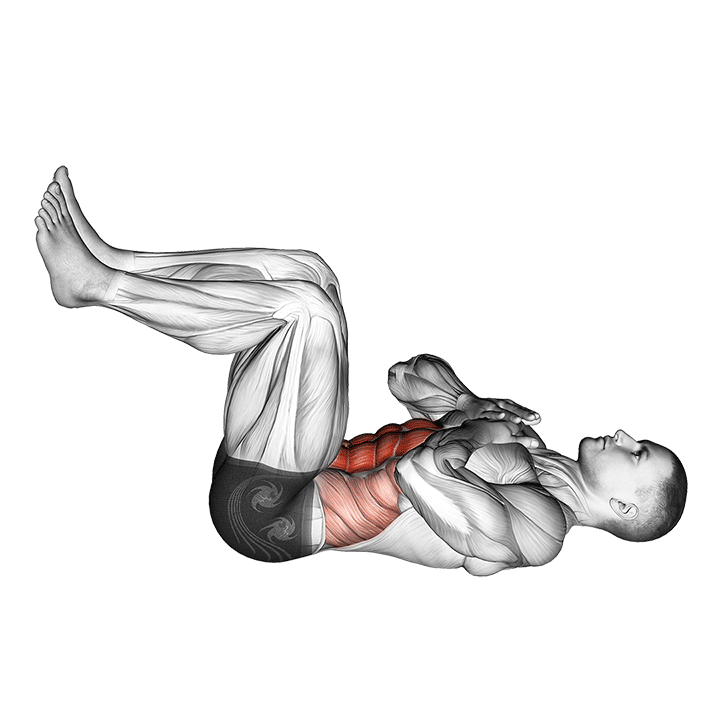
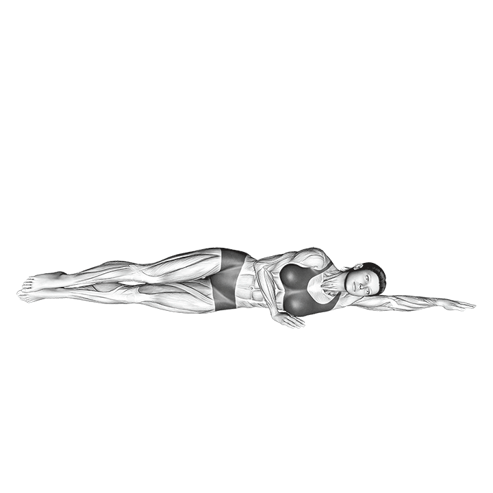
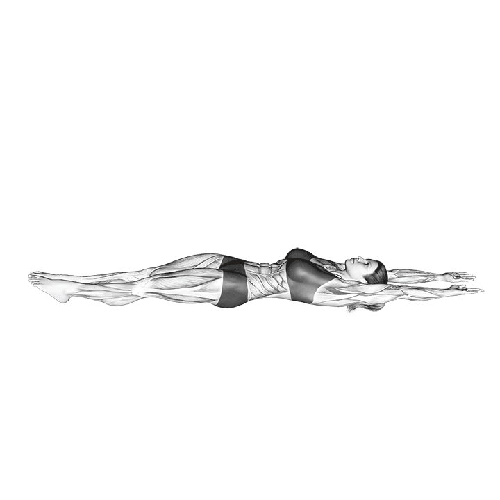

DESCRIPTION:
“Express Core workout - every exercise for 30 seconds,
rest 15 secs between exercises. User a round timer. 3 x through.”

Crunches
CATEGORY:
Abs
DESCRIPTION:
Sit and lay back on a swiss ball, position feet slightly wider then
shoulder width, perform a half-crunch fully engaging the core.
EQUIPMENT:
Swiss Ball
PRIMARY MUSCLE:
Biceps femoris
DEFAULT REPS:
20

Crunches With Legs Up
CATEGORY:
Abs
DESCRIPTION:
On your back, legs extended straight up, reach toward your toes with your
hands and lift your shoulder blades off the ground and back.
EQUIPMENT:
none (bodyweight exercise)
PRIMARY MUSCLE:
Rectus abdominis
DEFAULT REPS:
15

Side Leg lifts
CATEGORY:
Abs
DESCRIPTION:
Lying on your side, check that your ankles, knees, hips, shoulders, and ears are aligned.
Move your legs slightly in front (forming this "banana shape" helps balance and
protects your lower back). Prop your head on your hand or stretch your bottom arm out
to the side and rest your head on it. Your arm placement is just for balance; you should be
engaging your core to lift your legs. Pull your abdominal muscles in.
Inhale, allowing your body to elongate as the breath moves down the full length of your
spine.As you exhale, engage your abdominals and lift your legs a few inches off the mat.
Focus on keeping your inner legs together from your sit bones to your heels.
Inhale as you lower your legs back down to the mat, elongating your body in a controlled
movement.Aim for 5 to 8 reps, then turn to your other side and repeat.
EQUIPMENT:
none(bodyweight exercise)
PRIMARY MUSCLE:
Obliquus externus abdominis
DEFAULT REPS:
16

Sit-up | Touch Toes | Pilates
CATEGORY:
Abs
DESCRIPTION:
Get on a mat and lie on your back. Contract your abs, stretch your legs out horizontally.
Perform a sit-up and touch your toes (or as close as possible) Make sure your lower back
remains in contact with the mat.
EQUIPMENT:
Gym Mat
PRIMARY MUSCLE:
Rectus abdominis
DEFAULT REPS:
15